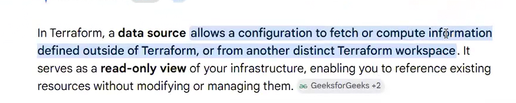
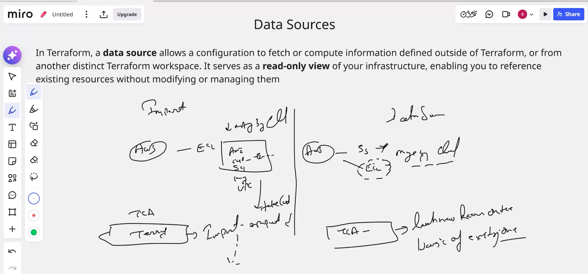
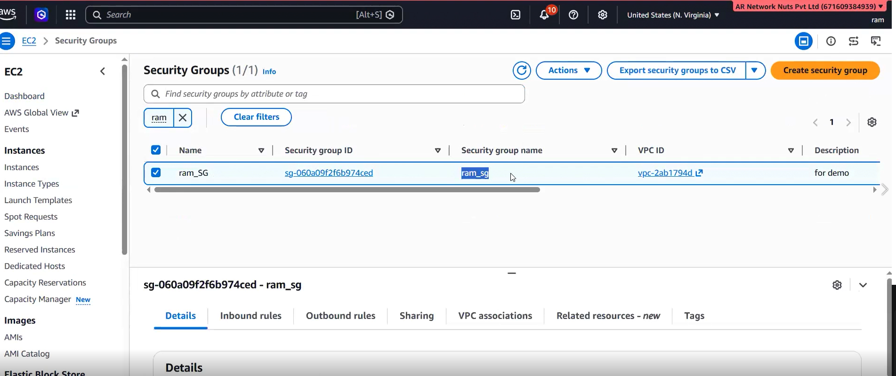
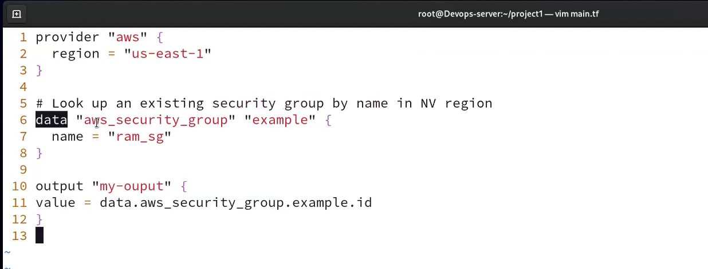
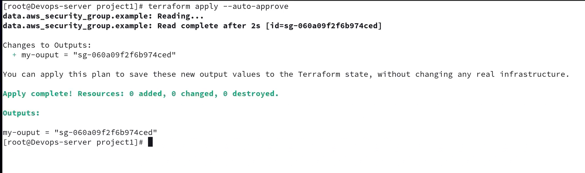
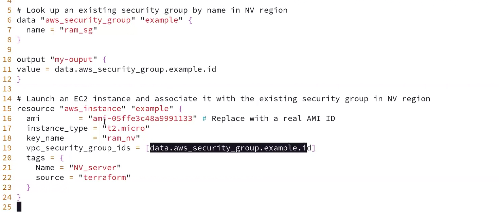
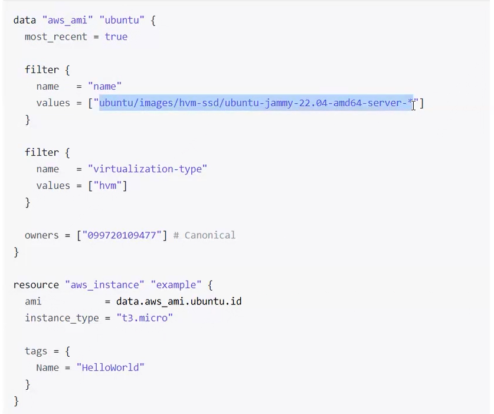
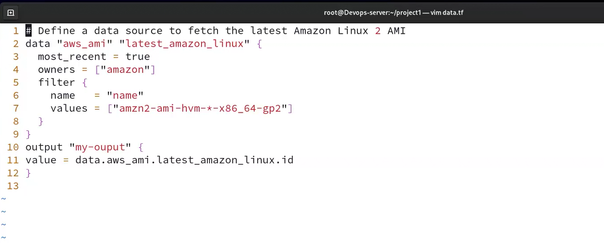

07-terraform-data-sources-screenshots.pdf in this folder.

ram_sg = sg-060a09f2f6b974ced in vpc-2ab1794d (us-east-1)
main.tf — data "aws_security_group" "example" looked up by name + output of its ID
terraform apply — Reading… Read complete, output = SG ID, 0 added, 0 changed, 0 destroyed
NV_server attached to the existing SG via vpc_security_group_ids = [data.aws_security_group.example.id]
data "aws_ami" "ubuntu" with most_recent, name/virtualization filters, Canonical owner
data.tf — latest Amazon Linux 2 AMI (owners = ["amazon"], amzn2-ami-hvm-*-x86_64-gp2)